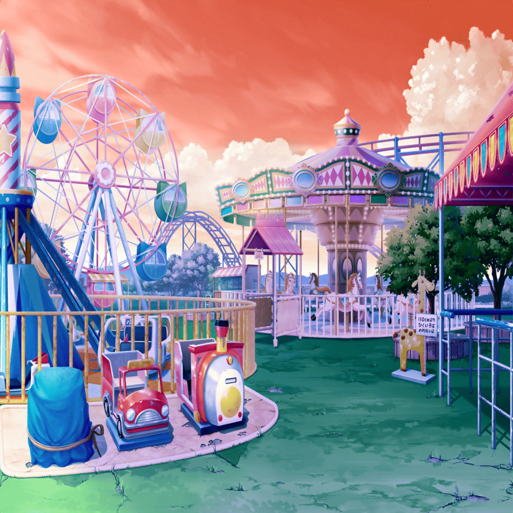

商店街
はぐみ
お待たせ、薫くんっ！
薫
いいや、私も今来たところさ。
それにしても、すごい量のコロッケだね
はぐみ
えへへ、今日はすっごく頑張って、
作業するつもりだから、いっぱい持っていくんだ！
はぐみ
あれ？ かのちゃん先輩達は？
薫
どうやら美咲とこころは、今日は来れないみたいだよ。
花音は遅れてくる、と言っていたね
はぐみ
……そっかあ
薫
美咲のことが心配かい？
はぐみ
うん、ちょっとだけ……
みーくん、元気なかったし……
はぐみ
けど、だいじょーぶだよっ！
はぐみは、自分のできることをやるって決めたんだ！
それがみーくんのために、できることだからね！
薫
フフ、はぐみらしい素敵な考え方だね。
私も全力で協力しようじゃないか！

花咲川スマイル遊園地
はぐみ
それじゃあ、どこから始めようか？
薫
そうだね……
まずはあのメリーゴーラウンドなんかが、いいんじゃないかな
はぐみ
うん、そうする！
このメリーゴーラウンド……お馬さんの
ペンキが剥がれちゃってるね……
薫
あぁ、心なしか表情も悲しげに見えるよ……
はぐみ
はぐみ、ちっちゃいころに、これ乗ったことあるんだ。
とーちゃんに写真撮ってもらったり、すっごく楽しかったよ！
薫
フフ、素敵な思い出だね。
それじゃあはぐみの思い出のメリーゴーラウンドを、
私達の力で取り戻そうじゃないか！
はぐみ
うん、まずはお馬さん達から塗りなおそう！
それじゃあこの子は白く塗ってー、
こっちの子はピンク！
薫
あぁ……素晴らしいチョイスだね。
見てごらん、彼らの目も輝きを取り戻し始めたみたいだ
はぐみ
ホントっ！？
そうだ、もっといろんな色のお馬さん達がいると楽しいかも！
こっちは青にして、こっちは金色にしよー！
薫
色鮮やかなお馬さん達が、回転する……
さぞ、儚くなること間違いなしだね
はぐみ
よーし、それじゃあどんどん塗ってくよ～！
はぐみ
できたーっ！
薫
素晴らしい出来栄えだよ、はぐみ……！
お馬さん達が今にも駆け出しそうだね……！
はぐみ
薫くんが最後に塗ってた白いお馬さんも、
すっごくキレイだよっ！
薫
お褒めにあずかり光栄だよ。
どうかな？
昔はぐみが乗ったメリーゴーラウンドに、近づいたかい？
はぐみ
うんっ！ すっごく楽しそう！
けど、もっといっぱい絵を描いたり、飾りつけしたら、
お客さんも喜ぶかも！
薫
そうだね……今の飾らない姿も素晴らしいけれど、
そうしたら、もっと儚くなる気がするよ
はぐみ
えへへ、みんなどんな飾りつけにするのかな？
こころんは、すごいの描いてくれそうだよねっ！
薫
こころの自由さは、私にも想像がつかないからね。
きっと思いもよらないデザインになると思うよ
はぐみ
かのちゃん先輩はー、
クラゲみたいにひらひらした飾りつけしてくれそう！
薫
美咲やミッシェルのデザインは、
どんな儚いものになるんだろうね
はぐみ
あはは！ 考えるだけですっごく楽しみ！
はぐみ
それじゃあ次はどこを塗りなおしに行こっか！
薫
おや、今日はもうメリーゴーラウンドはいいのかい？
はぐみ
うんっ、あとはみんなでやりたいもん！
はぐみ
こころんも、みーくんも、ミッシェルも、かのちゃん先輩も
一緒に、みーんなで飾りつけするんだ！
はぐみ
その方が、ぜったい楽しいメリーゴーラウンドになると思う！
はぐみ
楽しいメリーゴーラウンドができたら、
みーくんも、笑顔になってくれるかなあ？
薫
フフ、そうだね。
きっと素敵な笑顔を見せてくれるはずだよ
はぐみ
そうだっ、終わったら、みんなでコロッケパーティしようよ！
はぐみ、また持ってくるから！
薫
それは楽しみだね。
私も完成が待ち遠しくなってきたよ
はぐみ
えへへ、みんなのこと考えてたら、
はぐみ、もーっとやる気が出てきちゃった！
薫
これ以上かい？
はぐみの中の情熱の炎はとどまるところを知らないね……！
はぐみ
えへへ、次はコーヒーカップのとこ、塗りなおそうっと！
行こう、薫くん！